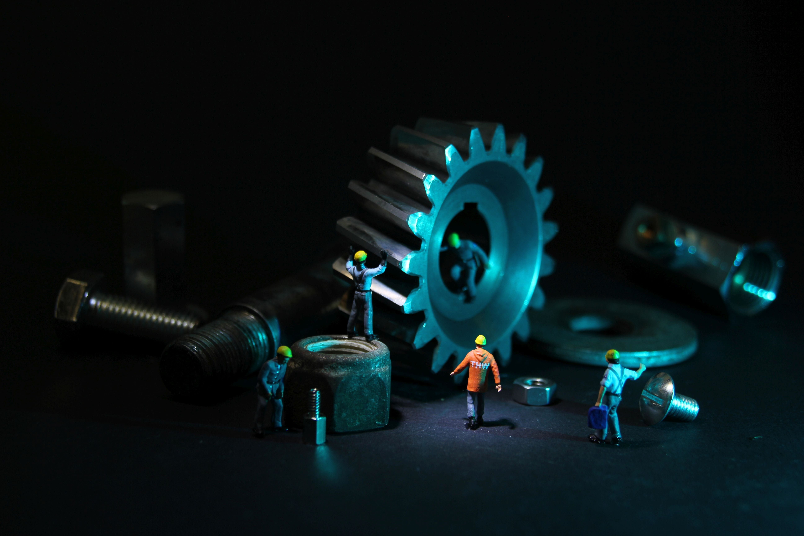
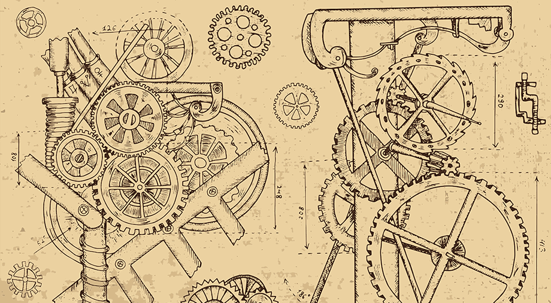

Introduction
Every year on September 15th, we come together to celebrate Engineers' Day, a day dedicated to recognizing the incredible contributions of engineers to society. Engineers are the unsung heroes behind the infrastructure, technology, and innovations that shape our world. From designing bridges that connect cities to developing cutting-edge technology, engineers play a pivotal role in making our lives better, safer, and more convenient. In this blog, let's delve into the significance of Engineers' Day and the amazing work that engineers do.
The Birth of Engineers' Day
Engineers' Day is celebrated on September 15th in India to honor the birthday of Sir Mokshagundam Visvesvaraya, one of the greatest engineers in Indian history. He was not only a brilliant engineer but also a visionary statesman who contributed significantly to the development of infrastructure in India. His remarkable achievements include the design and construction of the Krishna Raja Sagara Dam in Karnataka, which transformed arid regions into fertile agricultural lands.
Engineering: Shaping the Modern World

Engineers have been instrumental in shaping the modern world. They have built towering skyscrapers, intricate transportation networks, and advanced communication systems. They have developed life-saving medical devices, eco-friendly energy solutions, and technologies that connect people across the globe. Without engineers, our world would lack the innovations and conveniences we often take for granted.
Conclusion
On Engineers' Day, let's take a moment to appreciate the incredible work of engineers and the impact they have on our lives. Their dedication, creativity, and commitment to making the world a better place deserve recognition and celebration. As we look to the future, it's clear that engineers will continue to play a vital role in shaping a brighter, more advanced, and sustainable world for generations to come. Happy Engineers' Day!
Underrated Inventions by Engineers
| Invention | Inventor(s) | Year |
|---|---|---|
| Stethoscope | René Laennec | 1816 |
| Pacemaker | Wilson Greatbatch | 1958 |
| Ballpoint Pen | László Bíró | 1938 |
| GPS (Global Positioning System) | Ivan Getting, Bradford Parkinson, Roger L. Easton | 1970s |
| Post-it Notes | Spencer Silver and Art Fry (3M) | 1968 |
This Engineers' Day - Let's Recreate The Journey Of An Engineer
-with a movie
In the enchanting world of cinema, certain movies transcend mere entertainment and weave themselves into the very fabric of society. '3 Idiots,' a cinematic masterpiece directed by Rajkumar Hirani, is one such film that not only captivated audiences but also intricately linked itself to the tumultuous journey of engineers. This iconic Bollywood gem is more than just a story; it's a mirror reflecting the trials, tribulations, and aspirations that engineers face in their quest for knowledge, success, and self-discovery.
Summary:
"3 Idiots" is a heartwarming tale of three college friends - Rancho, Farhan, and Raju - at the fictional Imperial College of Engineering in India. Rancho, an unconventional and brilliant student, encourages his friends to follow their dreams instead of conforming to societal and educational pressures. Together, they challenge the rigid education system, experience hilarious misadventures, and form a deep bond of friendship. Years later, they embark on a journey to find Rancho, who had disappeared. Along the way, they discover his passion for innovation and teaching. The film is a humorous and touching exploration of the pursuit of happiness, knowledge , and the value of true friendship.
Want to watch movie again? Click here
Things to know!
"3 Idiots" resonates with engineers by showcasing:
- Academic Pressure: The film reflects the intense academic pressure engineers often experience.
- Passion Pursuit: It emphasizes the importance of pursuing one's passion, a common aspiration among engineering students.
- Innovation and Creativity: The movie encourages engineers to think creatively and innovate.
- Friendship: It highlights the significance of camaraderie and support during the engineering journey.
- Breaking Stereotypes: "3 Idiots" challenges engineering stereotypes, portraying engineers as unique and creative individuals.
- Parental Expectations: The film explores the role of parental expectations in career choices.